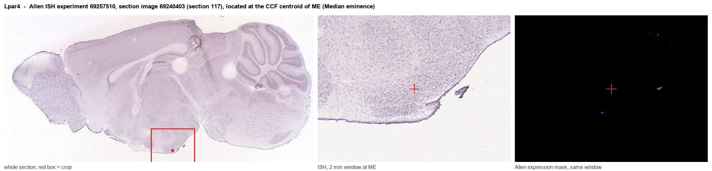
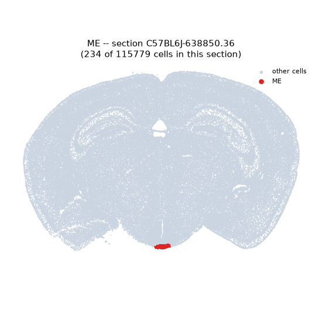
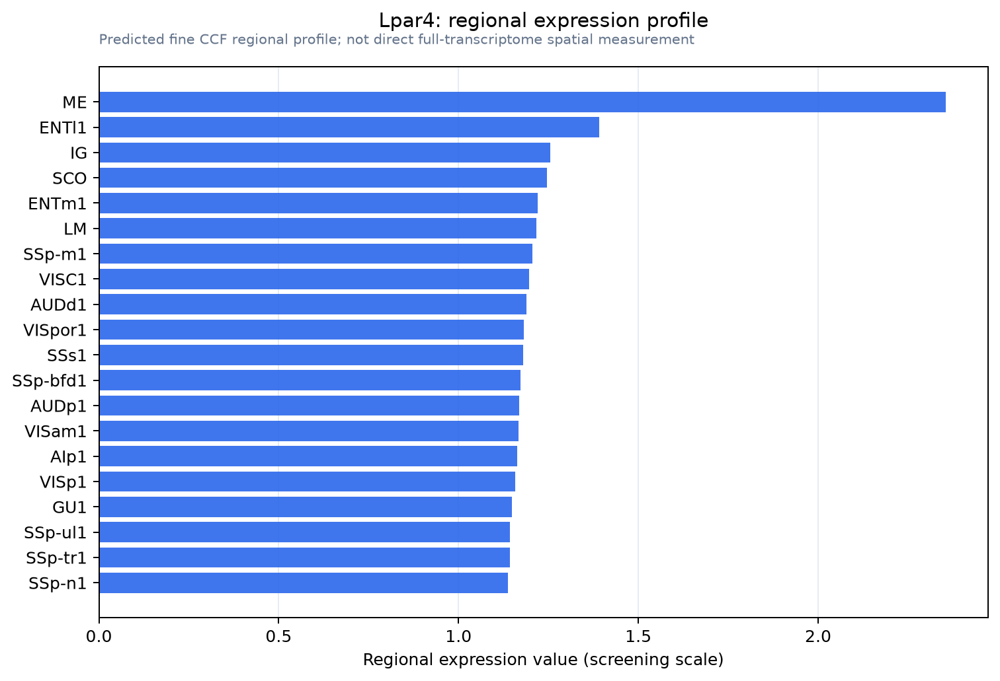

Lpar4
Lysophosphatidic acid receptor 4 (LPA receptor 4) (LPA-4) (G protein-coupled receptor 23) (P2Y purinoceptor 9) (P2Y9) (Purinergic receptor 9)
Spatial tier: REGION_BIASED · Class: GPCR · Top region: ME (Median eminence) · Positive regions: 55/554
Function in ME: evidence, prediction, innovation
- Gene function
- Lpar4 (formerly P2Y9/GPR23) encodes a non-EDG-family lysophosphatidic acid receptor coupling mainly to G12/13-RhoA, and also Gs and Gq. It is the vascular LPA receptor: Lpar4-deficient embryos show haemorrhage, oedema, dilated vessels and impaired pericyte and smooth-muscle coverage, and LPA4 regulates YAP/TAZ- and Notch-dependent angiogenesis. LPAR4 protein is also expressed by developing cortical and hippocampal neurons.
- Region function
- The median eminence is the neurohaemal interface of the hypothalamus, where fenestrated, highly permeable portal capillaries collect hypophysiotropic hormones and tanycyte endfeet wrap the vasculature to control barrier properties.
- Published in this region
- expression only No functional study of Lpar4 in the ME. The closest evidence is that LPA4 is selectively expressed by brain vascular endothelium and required for LPA-mediated preservation of blood-brain barrier integrity and claudin-5 after stroke (Yamada 2026), plus Allen ISH showing ME expression energy 0.78-0.96 versus 0.51 for grey matter (experiment 69257510).
- Predicted function
- Prediction: the median eminence signal is vascular, reflecting LPA4 on fenestrated portal endothelium and its mural cells, where G12/13-RhoA signalling sets junctional tension and mural coverage and therefore how permeable this organ stays. Endothelial Lpar4 deletion should exaggerate leakiness and tanycyte barrier rearrangement, altering the fasting-induced permeability switch, with little direct effect on neuronal firing.
- Innovation
- ★★★★★ 5/5 LPA4 has never been studied in any circumventricular organ despite the median eminence being the brain's most specialised fenestrated vascular bed.
- Tools
- Lpar4 knockout mice, viable with partial embryonic vascular lethality (Sumida 2010; Yamada 2026); anti-LPAR4 antibodies validated on mouse brain (Ishidou 2025); LPA and autotaxin inhibitors as non-selective pharmacology; no selective LPA4 agonist or antagonist is established.
- References
Direct evidence located at the region

Allen ISH experiment 69257510, section image 69240403 (section 117): the section that contains the CCF centroid of Median eminence according to the Allen image-to-atlas alignment (reference_to_image), with a 2 mm window around that point. Left: whole section, red box = window. Middle: ISH signal. Right: Allen's expression-mask view of the same window. open this image in the Allen viewer
Direct spatial evidence

Regional expression figure

Predicted WMB × fine-CCF profile; not direct full-transcriptome spatial measurement.
Spatial profile
Evidence and specificity
- Evidence status
- PREDICTED_FINE
- Direct sources
- None; predicted localization only
- Exclusive threshold
- 12 positive regions out of 554
- Spatial specificity
- 0.284
- Top-region fraction
- 0.042
- Filter status
- PASS
Interpretation limits
- Cell-type-to-region projection is imputed expression, not direct spatial measurement.
- Adult reference atlases do not establish stability across age, sex, strain, state, or disease.
- Transcript abundance does not guarantee protein abundance or genetic-tool performance.